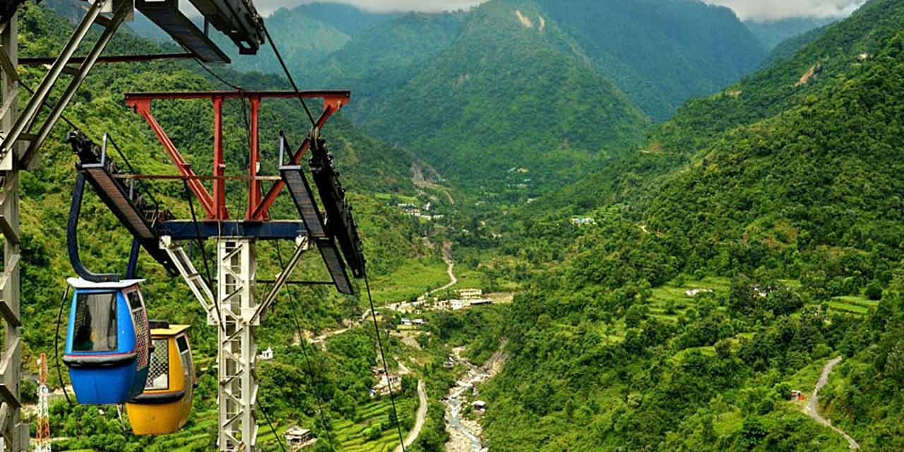

|  |
| Sahastradhara literally means 'thousand-fold spring'. It is a popular attraction,
famous for its medicinal & therapeutic value as its water contains sulphur. Also known as Sulphur Springs, this waterfall cascades through limestone stalactites, making the water rich in sulphur. A dip in the Sulphur-rich water here feels cold and refreshing but is believed to have remarkable medicinal advantages. The temperature of the water here is a little lower than its surroundings. Its picturesque beauty attracts a lot of travellers from faraway places. One can even enjoy a stunning view of the mountains on a fun ropeway ride. |